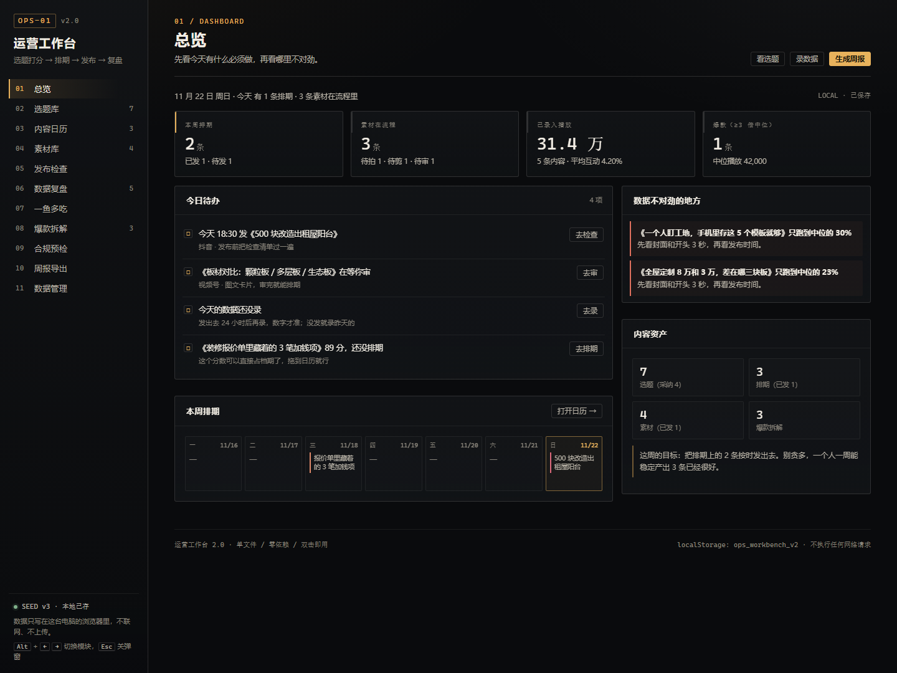

OPS-01可试用 · 零依赖内容运营工作台 2.0
十一个模块：总览、选题库（带可量化打分）、内容日历、素材库、发布检查清单、 数据复盘（纯 Canvas 趋势图）、一鱼多吃、爆款拆解库、合规预检、周报导出、数据管理。 单文件、零依赖，双击就开，数据只存在你自己的浏览器里，换电脑可以导出 JSON 带走。
11 模块选题打分Canvas 趋势图
SEED_VERSION本地存储
直接打开
不用登录 · 不用联网